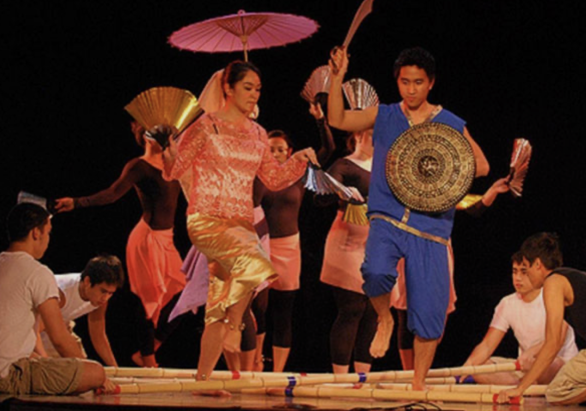

Culture
My culture in Luzon, Philippines is rich in traditions, family values, and celebrations. One important part of the culture is the strong respect for elders and the close bond between family members. Families often spend time together during gatherings, sharing traditional foods and stories. Cultural festivals and religious events are also very important, where communities come together to celebrate their beliefs and heritage. Traditional Filipino foods, music, and dances are a big part of daily life and help keep the culture alive. I like my culture because it teaches kindness, respect, and the importance of family and community. 🌏🇵🇭

Celebrations
The Philippines is known for its many colourful and lively celebrations that reflect the country's culture, religion, and history. One of the most famous celebrations is the Sinulog Festival, which is held in Cebu to honour the Santo Niño and features street dancing, parades, and t raditional music. Another popular celebration is the Ati-Atihan Festival, where people paint their faces, wear vibrant costumes, and dance through the streets to celebrate Filipino heritage. In addition, the Christmas season in the Philippines is one of the longest in the world and includes traditions such as Simbang Gabi, colourful lantern displays, and large family gatherings. These celebrations show how Filipinos value community, faith, and joy, making festivals an important part of life in the Philippines. 🎉🇵🇭
.